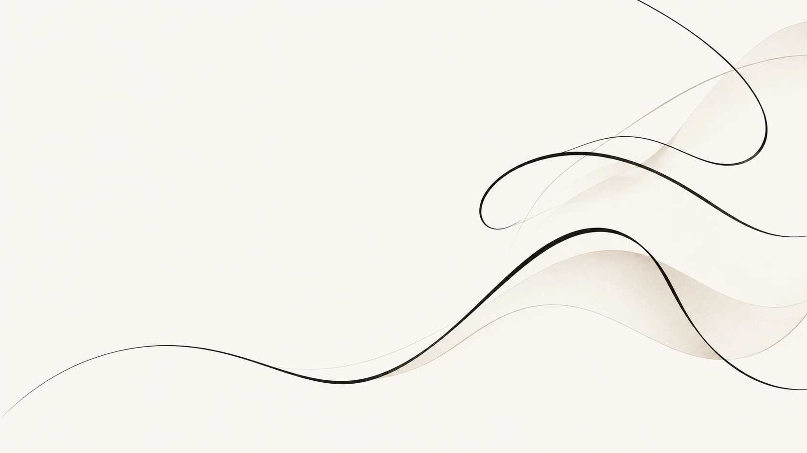

Reminds you. Remembers stuff.
Reminders, timers, alarms, lists and notes, by voice. It nudges you on time, with a snooze, and remembers what you tell it.

Your assistant on Windows · Free · Private
Hold Ctrl + Win and talk. Sayso reminds you, remembers things, knows your calendar and answers in a snap, and learns your words as you go. It types for you too, in any app, in English, اردو and Roman Urdu. Powered by Sayso AI, with your voice recognised right on your laptop.
Try it
Hold the button, or your space bar, the way you'd hold Ctrl + Win. This is a simulation of what Sayso does on your PC, so nothing here listens to your mic.
Why Sayso
Reminders, timers, alarms, lists and notes, by voice. It nudges you on time, with a snooze, and remembers what you tell it.
Connect Google or Outlook (read-only). Ask "what's next?", get a heads-up before meetings, and a quick brief each morning.
Correct a name Sayso misheard and it remembers. Next time it's spelled your way, no settings needed.
Speech is recognised on your PC, and your reminders, lists and memories stay there. Sayso AI only gets text, only when it's needed. No account, no subscription.
voice sent to the cloud: 0 bytesSwitch mid-sentence and it keeps up.
Runs on an ordinary Windows laptop. A graphics card makes it quicker, but you don't need one.
It drops the ums, follows "no wait", and punctuates from your tone. Say "new line" when you want one.
Optional: say it, wait for the chime, then talk. It stops by itself when you do.
How it works
In any app. Go on, press them now: the keys light up. Double-tap for hands-free.
A message, an email, a note. Or a request: open an app, change the volume, ask the time.
It's typed where your cursor is, or it's done. Press Esc while talking to throw it away.
Urdu and Roman Urdu
Talk the way you actually talk: English, Urdu and Roman Urdu in the same breath. "WhatsApp kholo", "awaz thori kam karo", or a whole message in Urdu.
FAQ
ask us anything else ✶
It's your assistant on Windows. Set reminders, timers and alarms, keep lists and notes, and tell it things to remember. Connect your calendar and ask what's next. Ask anything and get a quick answer. Run your PC ("open Chrome", "volume 40"). And it types for you in any app, so you can just talk.
Yes. Sayso is free.
On your PC. Reminders, lists, notes, memories and your calendar link are kept in one place on your computer, and you can see, change or delete all of it in the dashboard (Your stuff › Forget everything wipes it). Nothing is synced to an account, because there isn't one.
For the smart parts, yes: Sayso AI answers your questions, understands unusual commands and tidies your dictation. Offline, Sayso still types, runs commands, and keeps your reminders, timers, lists and memory, because your speech is recognised on your PC.
Windows 10 and 11. A graphics card makes it faster, but an ordinary laptop is fine.
Almost any: Chrome, WhatsApp, Word, Notepad, Discord. If you can type there, you can talk there.
Speech recognition always runs on your PC. Sayso AI (Claude) steps in when Sayso doesn't understand a command, can't answer a question, or you ask it to rewrite, explain or summarise selected text, and it tidies the punctuation of your dictation. When you ask a question, a few things you told Sayso to remember that relate to it can go along too. Only text is sent, never your voice. It's free, with a fair daily limit. See the privacy policy.
Not yet. Sayso is Windows only for now.
Download the zip, unzip it, and open Sayso.exe. Everything it needs is inside the folder, speech models included, so it works offline from the start. To remove it, quit Sayso from the tray and delete the folder.
Sayso isn't code-signed yet, so Windows SmartScreen doesn't recognise it. Click "More info", then "Run anyway".
Download
Updating? Unzip over your old Sayso folder; your settings and data are kept.
Questions? hello@justsayso.lol